Depuis la première fois où j'ai touché un ordinateur à aujourd'hui, je n'ai jamais cessé d'aimer l'Informatique avec un grand I. Tout commence à l'âge de 3 ans où je regarde mes parents dans leur bureau en train d'utiliser un Minitel, un type de terminal informatique destiné à la connexion au service français de Vidéotex, commercialisé entre 1980 et 2010. La curiosité m'anime déjà, et je décide d'analyser ce qu'on peut y faire.
Une année passe, la technologie évolue toujours plus vite et je vois arriver dans notre maison deux ordinateurs portables avec le célèbre système d'exploitation Windows XP (puis Windows 7). Je découvre Paint, Word et je passe une bonne partie de mon temps à essayer de comprendre le fonctionnement de l'ordinateur. Un peu plus tard, je reçois une tablette tactile Samsung, puis en 5eme, un PC fixe. Je me passionne pour l'histoire de l'informatique, la programmation en général, le développement web utilisant les langages HTML, CSS et JavaScript... En parallèle, j'intègre le club informatique de mon collège où l'on étudie et développe des algorithmes (avec Arduino) pour faire fonctionner les hélices d'un hélicoptère ou encore déplacer/téléguider un robot par exemple.
Puis vient le lycée (Voie Générale) ! Durant mon année de Première et de Terminale, je garde la spécialité NSI (Numérique et sciences informatiques) qui m'offre encore plus de connaissances dans le secteur du développement, des logiciels, des réseaux informatiques, etc. En fin d'année de Terminale, mon professeur d'NSI donne une conférence à notre classe sur l'Intelligence Artificelle et je me découvre une passion pour ce domaine encore tout nouveau/récent comparé à l'Histoire. A la suite de cette conférence, il décide de m'enseigner des techniques de Machine Learning pendant un mois ; cela marque la fin de ma scolarité au lycée et je vois en même temps que ma demande pour intégrer l'IUT de Paris - Rives de Seine est acceptée.
Depuis fin août 2022, je suis un BUT Informatique qui va me donner toutes les ressources (tant dans la théorie que dans la pratique) pour me permettre de réaliser mon projet professionnel. Après ce BUT, j'ai pour ambition d'intégrer une école d'ingénieur et de me spécialiser dans l'Intelligence Artificielle ou dans la Sécurité Informatique. Et après cette école d'ingénieur, j'aimerais conclure mes études par une formation en cybersécurité de 3 ans.
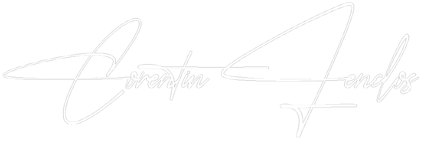
+ 450 Heures
+ 350 Heures
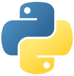
+ 1400 Heures
+ 40 Heures
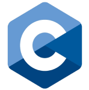
+ 250 Heures
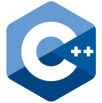
+ 350 Heures
+ 270 Heures
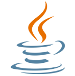
+ 200 Heures
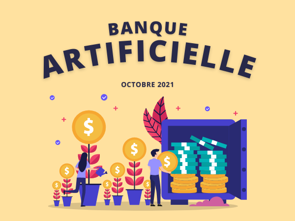
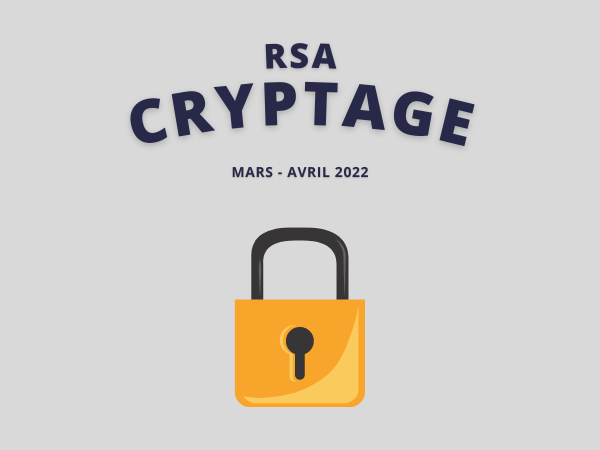
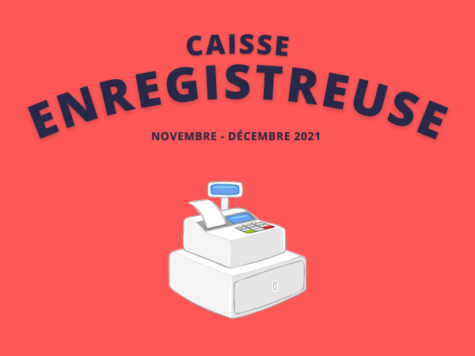
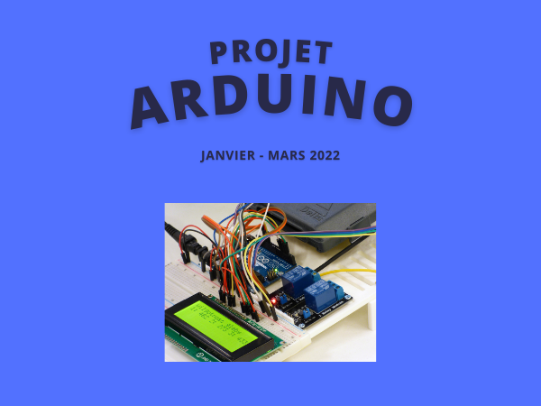
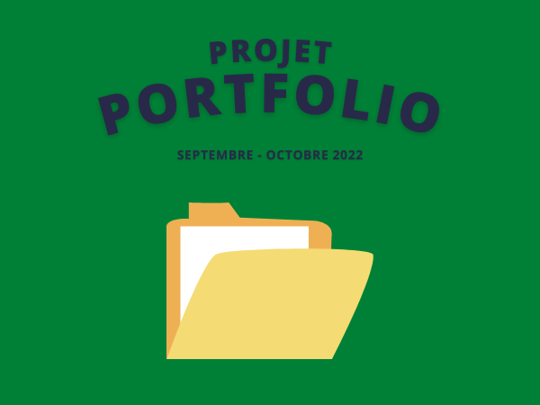
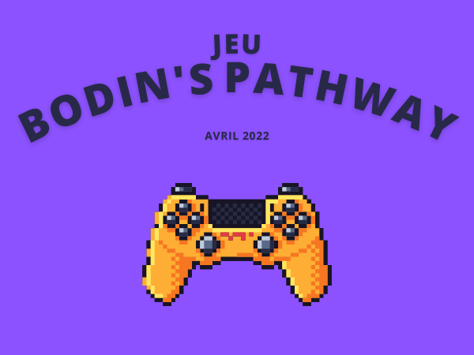
IUT de Paris - Rives de Seine
Lycée Polyvalent Jean-Baptiste Dumas
Enseignements de spécialité en Terminale : NSI | SI + Maths Complémentaires
Certification - PIX
Thèmes :
Modérateur sur le site NosDevoirs | Brainly
N°1 - Plateforme Iternationale d'Apprentissage
Rectorat de Montpellier, Occitanie :
Direction des Systèmes d'Information et de l'Innovation (DS2I)
Premier Prix au Concours de Trompette de L'Isle-sur-la-Sorgue